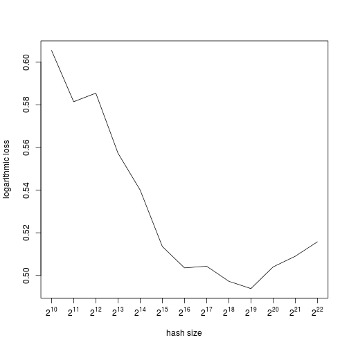

Wush Wu
Taiwan R User Group
source: http://edition.cnn.com/2014/01/15/travel/10-things-taiwan/
http://www.meetup.com/Taiwan-R
\[y = X \beta + \varepsilon\]
| Sepal.Length | Sepal.Width | Petal.Length | Petal.Width | Species | |
|---|---|---|---|---|---|
| 1 | 5.1 | 3.5 | 1.4 | 0.2 | setosa |
| 2 | 4.9 | 3.0 | 1.4 | 0.2 | setosa |
| 51 | 7.0 | 3.2 | 4.7 | 1.4 | versicolor |
| 52 | 6.4 | 3.2 | 4.5 | 1.5 | versicolor |
| 101 | 6.3 | 3.3 | 6.0 | 2.5 | virginica |
| 102 | 5.8 | 2.7 | 5.1 | 1.9 | virginica |
model.matrix in Rmodel.matrix(~ ., iris.demo)
| (Intercept) | Sepal.Length | Sepal.Width | Petal.Length | Petal.Width | Speciesversicolor | Speciesvirginica | |
|---|---|---|---|---|---|---|---|
| 1 | 1 | 5.1 | 3.5 | 1.4 | 0.2 | 0 | 0 |
| 2 | 1 | 4.9 | 3.0 | 1.4 | 0.2 | 0 | 0 |
| 51 | 1 | 7.0 | 3.2 | 4.7 | 1.4 | 1 | 0 |
| 52 | 1 | 6.4 | 3.2 | 4.5 | 1.5 | 1 | 0 |
| 101 | 1 | 6.3 | 3.3 | 6.0 | 2.5 | 0 | 1 |
| 102 | 1 | 5.8 | 2.7 | 5.1 | 1.9 | 0 | 1 |
y ~ model: y is modelled by a linear predictor specified symbolically by modeliris:
Sepal.LengthSepal.WidthPetal.LengthPetal.WidthSpeciesmodel.matrix(~ ., iris)
. represents linear term of all columns except response in the data.frameall.equal(
model.matrix(~., iris),
model.matrix(~Sepal.Length+Sepal.Width+Petal.Length+Petal.Width+Species, iris)
)
## [1] TRUE
all.equal(
model.matrix(Species ~ ., iris),
model.matrix(Species ~ Sepal.Length+Sepal.Width+Petal.Length+Petal.Width, iris)
)
## [1] TRUE
+, the basic operator of linear predictor:, the interaction operator of linear predictormodel.matrix(~ Sepal.Length+Sepal.Width+Sepal.Length:Sepal.Width, iris.demo)
| (Intercept) | Sepal.Length | Sepal.Width | Sepal.Length:Sepal.Width | |
|---|---|---|---|---|
| 1 | 1 | 5.1 | 3.5 | 17.85 |
| 2 | 1 | 4.9 | 3.0 | 14.70 |
| 51 | 1 | 7.0 | 3.2 | 22.40 |
| 52 | 1 | 6.4 | 3.2 | 20.48 |
| 101 | 1 | 6.3 | 3.3 | 20.79 |
| 102 | 1 | 5.8 | 2.7 | 15.66 |
*, factor crossing: a*b interpreted as a+b+a:b^, crossing to the specified degreeall.equal(
model.matrix(~ Sepal.Length+Sepal.Width+Sepal.Length:Sepal.Width, iris.demo),
model.matrix(~ Sepal.Length * Sepal.Width, iris.demo)
)
## [1] TRUE
all.equal(
model.matrix(~ (Sepal.Length + Sepal.Width)^2, iris.demo),
model.matrix(~ (Sepal.Length + Sepal.Width) * (Sepal.Length + Sepal.Width), iris.demo)
)
## [1] TRUE
?formulacontr.treatmentcontr.polycontr.sumcontr.treatmentcontr.SASmodel.matrix(~ Species, iris.demo)
## (Intercept) Speciesversicolor Speciesvirginica
## 1 1 0 0
## 2 1 0 0
## 51 1 1 0
## 52 1 1 0
## 101 1 0 1
## 102 1 0 1
## attr(,"assign")
## [1] 0 1 1
## attr(,"contrasts")
## attr(,"contrasts")$Species
## [1] "contr.treatment"
contrasts(iris.demo$Species) <- contr.sum(levels(iris.demo$Species))
model.matrix(~ Species, iris.demo)
## (Intercept) Species1 Species2
## 1 1 1 0
## 2 1 1 0
## 51 1 0 1
## 52 1 0 1
## 101 1 -1 -1
## 102 1 -1 -1
## attr(,"assign")
## [1] 0 1 1
## attr(,"contrasts")
## attr(,"contrasts")$Species
## [,1] [,2]
## setosa 1 0
## versicolor 0 1
## virginica -1 -1
source: http://seckora.com/wp-content/uploads/2014/06/computer-trouble.jpg
source: http://images.dailytech.com/nimage/Display_Ads_MatrixAdvertising_Wide.png
Matrix::sparse.model.matrix.
nrow (\(7 \times 10^7\)) \(\times\) ncol (\(3 \times 10^7)\) \(\times\) 8 bytesnrow (\(7 \times 10^7\)) \(\times\) (\(13 + 26\)) \(\times\) (\(4 + 4 + 8\)) bytessparse.model.matrix with a best machine in Amazon Web Service.model.matrixcontr.treatment(levels(iris$Species))
## versicolor virginica
## setosa 0 0
## versicolor 1 0
## virginica 0 1
contr.treatment(levels(iris$Species))
## versicolor virginica
## setosa 0 0
## versicolor 1 0
## virginica 0 1
%%| V15 | V16 | V17 |
|---|---|---|
| 68fd1e64 | 80e26c9b | fb936136 |
| 68fd1e64 | f0cf0024 | 6f67f7e5 |
| 287e684f | 0a519c5c | 02cf9876 |
| 68fd1e64 | 2c16a946 | a9a87e68 |
| 8cf07265 | ae46a29d | c81688bb |
| 05db9164 | 6c9c9cf3 | 2730ec9c |
| V15 | V16 | V17 |
|---|---|---|
| 68fd1e64 | 80e26c9b | fb936136 |
| 68fd1e64 | f0cf0024 | 6f67f7e5 |
| 287e684f | 0a519c5c | 02cf9876 |
| 68fd1e64 | 2c16a946 | a9a87e68 |
| 8cf07265 | ae46a29d | c81688bb |
| 05db9164 | 6c9c9cf3 | 2730ec9c |
68fd1e64, 80e26c9b, fb936136 => 4, b, 6
68fd1e64, f0cf0024, 6f67f7e5 => 4, 4, 5
68fd1e64, f0cf0024, 6f67f7e5 => 4, 4, 5
FeatureHashing uses the Murmurhash3 algorithm implemented by digestlibrary(FeatureHashing)
hash_size <- 2^16
w <- numeric(hash_size)
for(i in 1:1000) {
data <- fread(paste0("criteo", i))
X <- hashed.model.matrix(V1 ~ ., data, hash.size = hash_size)
y <- data$V1
update_w(w, X, y)
}
library(pbdMPI)
library(FeatureHashing)
hash_size <- 2^16
w <- numeric(hash_size)
i <- comm.rank()
data <- fread(paste0("criteo", i))
X <- hashed.model.matrix(V1 ~ ., data, hash.size = hash_size)
y <- data$V1
# ...
library(FeatureHashing)
model <- is_click ~ ad * (url + ip)
m_train <- hashed.model.matrix(model, data_train, hash_size)
m_test <- hashed.model.matrix(model, data_test, hash_size)

## Error: is.data.frame(data) is not TRUE
## Error in eval(expr, envir, enclos): object 'm' not found
## "This movie is terrible but it has some good effects."
{kind=link}
{kind=link}